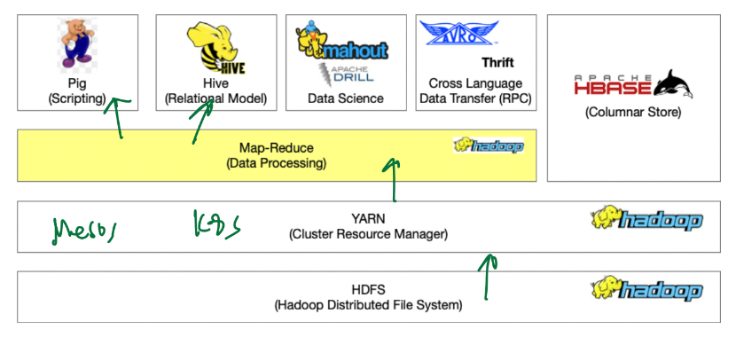
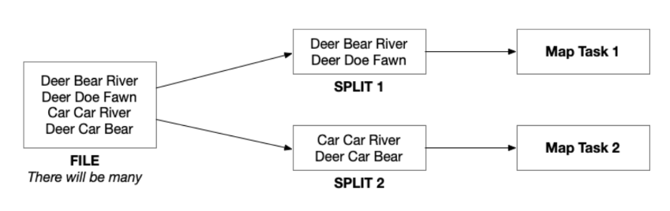
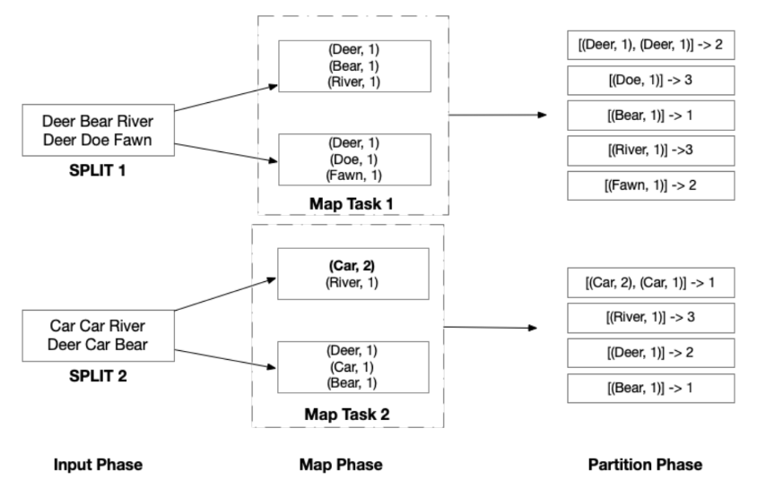
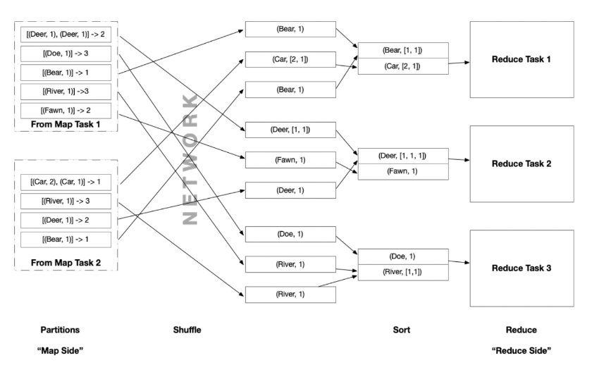
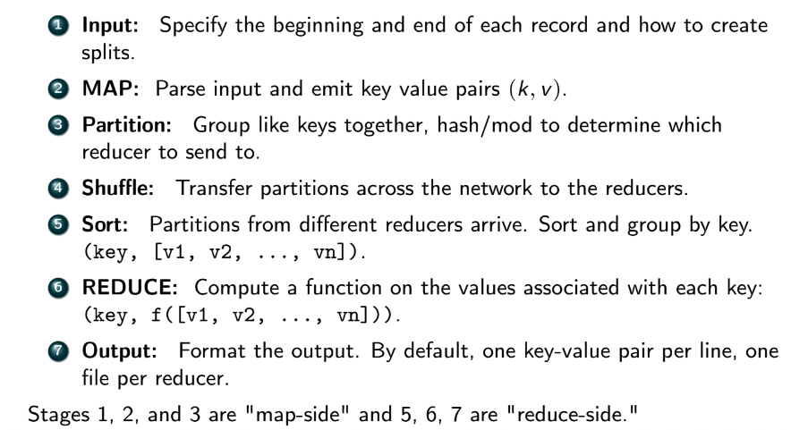
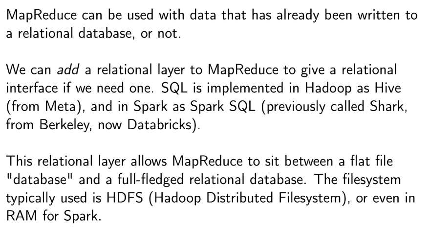
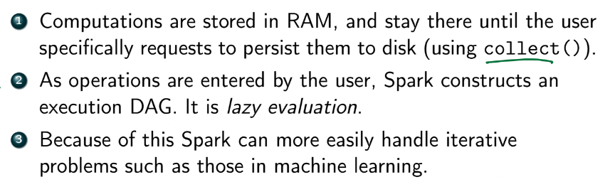
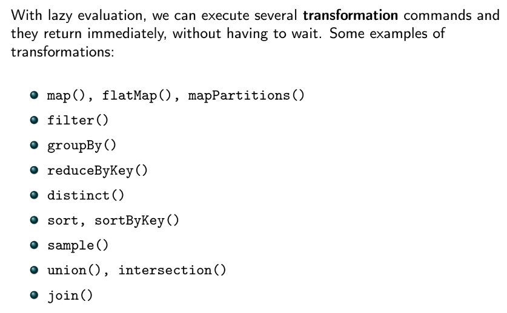

Distributed Systems
- two main data system architectures:
-
- replication - all nodes have exactly the same data
- pros:
- load balance
- fault tolerace => high availability, mostly consistent
- consistent means you always get the correct answer, or gets no answer (if correct one not avail)
- availability means even if a system goes down you'll still get the answer from somewhere, but it might be outdated or incorrect
-
- sharding - different nodes contain different data
Big Data
- purpose a big data system is to maximize the usage compute resources to increase the amount of work we can do per unit time
- big datasets do not fit in RAM on a single machine and require parallelism
- parallelism does not make data processing faster, but increases throughput
- can get a result quicker
- in some cases parallism can make processing slower due to overhead
Hadoop Ecosystem
- 
- Hadoop Distributed File System (HDFS) Infrastructure

MapReduce
- 7 dataflow phases
- example: count word frequencies in english novels
- Input
- InputFormat is the implementation of the input phase
- specifies:
- how records are laid out in files
- how to divide groups of records into splits
- splits are used to define parallelism and typically contain 1 block of data
- each split defines a map task
- 
- Map
- Partition
- need to group key-value pairs by key
- each key-value pair is assigned to a partition using a hash function applied on key, then a modulo based on number of reduce tasks
- thus all key-value pairs with same key is sent to the same reducer task in reduce phase
- 
- all of this is called the map side
- each partition is then shuffled across the network to reducers
- Shuffle
- Sort
- sort key-value pairs by key
- values are then grouped by key:
- 
- Reduce
- each reducer executes a reduce function
- in word counts example, it's the sum function
- note that a given reducer may act on key-value pairs that come from different mappers
- Output
- write
(key, frequency sum) outputs to a file
- each reducer outputs a single files
- can use an OutputFormat if we want to store output in another format such as delimited, Parquet, binary, etc
Map Reduce Summary
- 
- shuffle moves data from map side to reduce side
- MapReduce functions on each input split independently
- splits control which mapper each record goes to
- k-v pair from map phase controls which reducer operates on it
- MapReduce is a shared-nothing model
- also embarrassingly/pleasingly parallel
- MapReduce doesn't require a full big data infrastructure like Hadoop
- can be implemented in functional languages such as ML or Haskell
- can also combine mapper and reducer code via Unix pipe
- e.g.
cat record1 record2 | mapper.py | sort | reducer.py
SQL in MapReduce
- 
- SQL operations can be performed using combinations of map and reduce phases
- relational algebra select (SQL WHERE):
- filter rows / key-value before shuffle (map-side)
- aggregation γ:
- GROUP BY: partition OR sort (map-side)
- aggregation function: reduce!
- SQL queries are correspond directly to MapReduce
- subqueries spawn sub-MapReduce jobs, which encourage parallelism
- Apache Hive - uses SQL as a "relational language" on top of MapReduce and HDFS
- not RDBMS but sometimes used as DW
- Apache Pig uses a declarative language called Pig Latin for the same
- more closely resembles relational algebra
Apache Spark
- think of our pipeline as a series of algebraic steps that take as input as well as output arbitrary data
- instead of relations, Spark uses Resilient Distributed Datasets (RDDs) as input and ouput to/from operators

- higher levels of abstraction than RDD exist now
- but RDDs still useful when data is unstructured / schemaless
- data in Spark is treated as a single data structure as if it's on one machine
- advantages of Spark over Hadoop:
- 
- a lot faster than Hadoop
- Transformations and Actions
- 

- other advantages of Spark:
- Spark core executation model
- Spark word counts
- Spark computation of π
Spark SQL
- Spark uses the idea of MapReduce but not the implementation
- some Spark operators are built on top of Hadoop and MapReduce, but it is all abstracted away from user
- Spark is NOT an RDBMS
- so Spark SQL is not as sophisticated as RDBMS
- joins are the biggest source of poor performance in Spark
- Spark provides a relational layer on top of data in HDFS
- data in Spark SQL is represented as a DataFrame (looks like a table)
- example in python